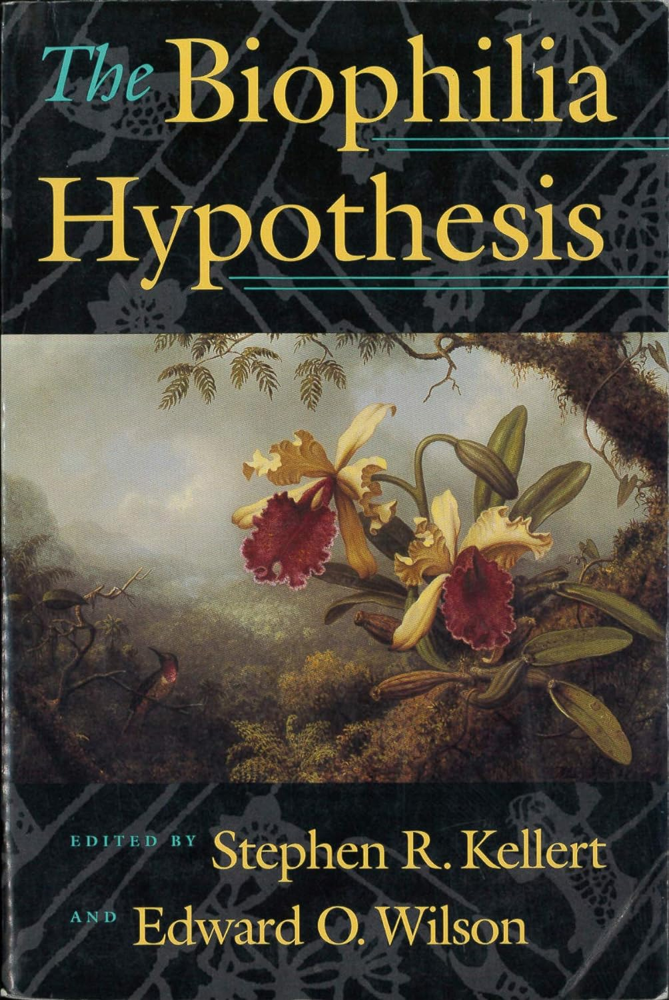
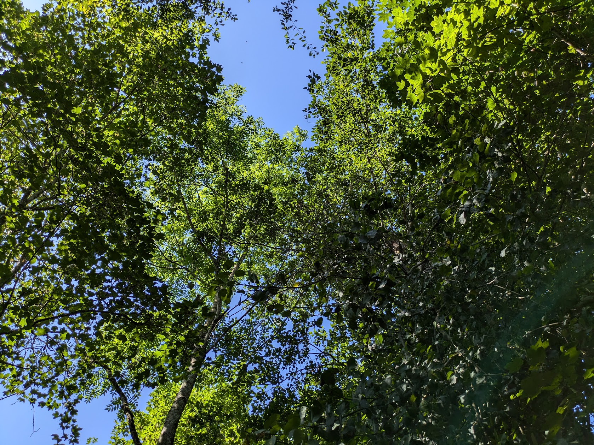
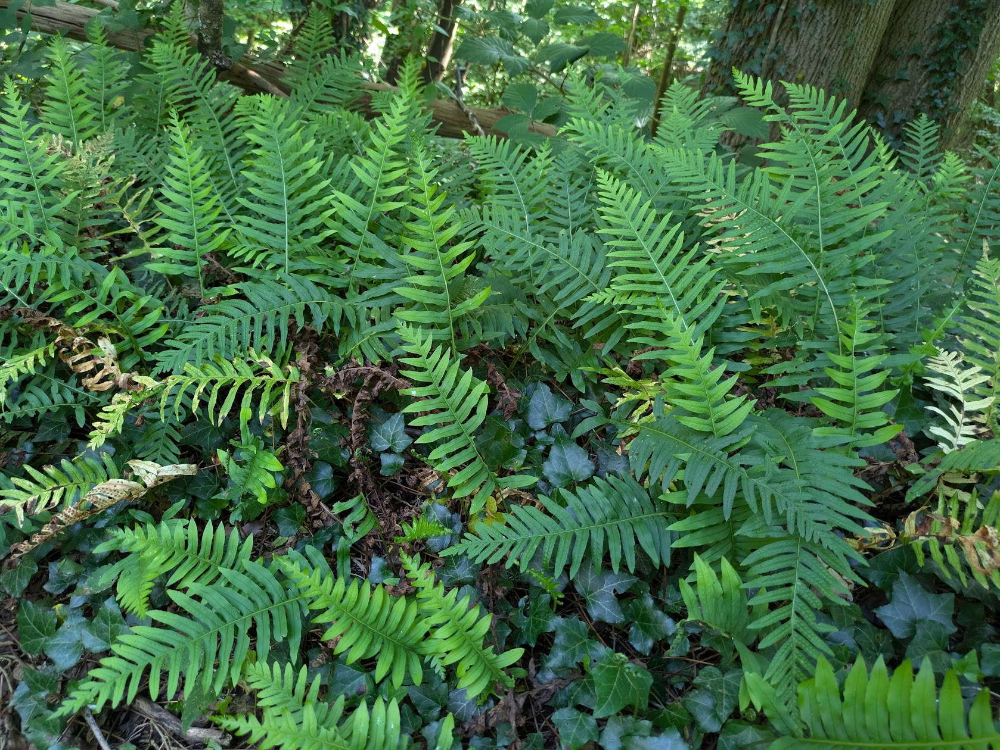
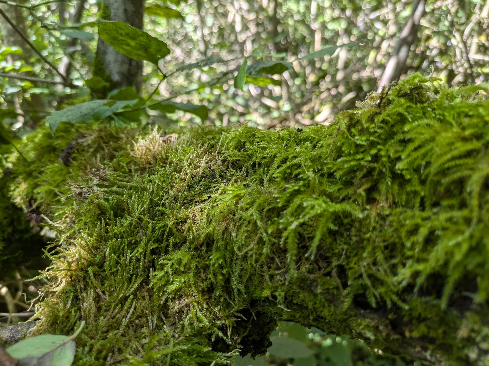
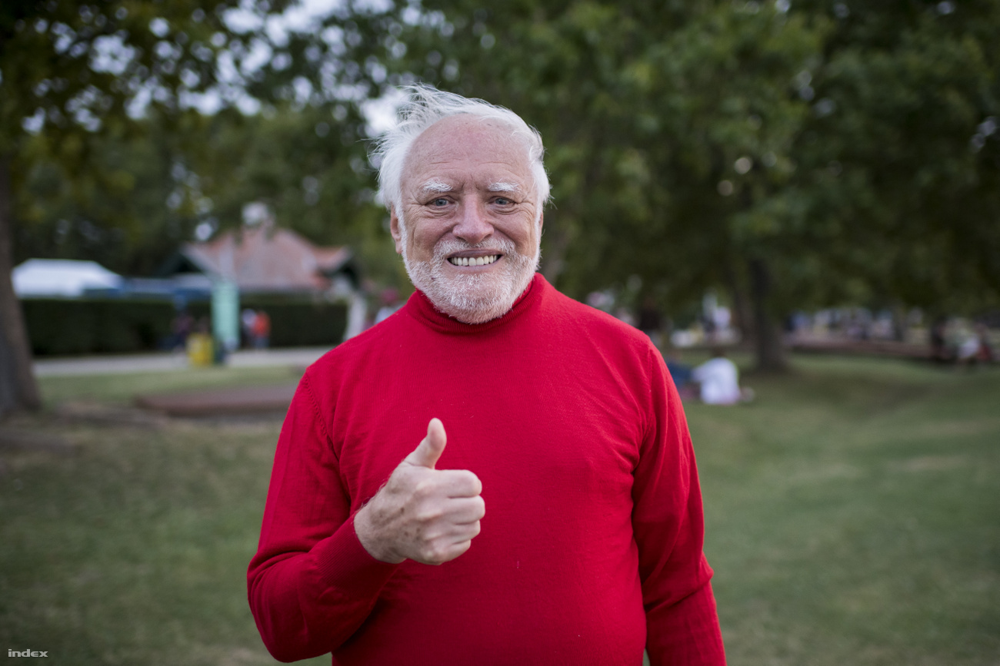
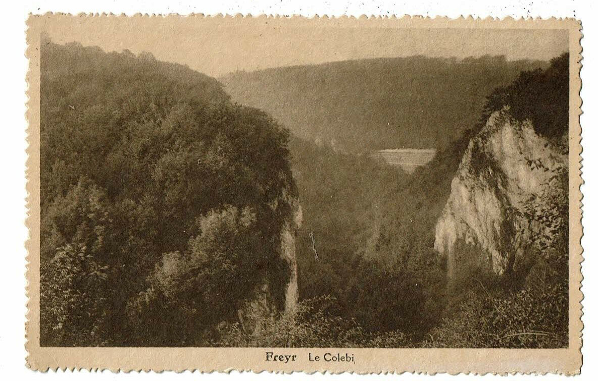

<!DOCTYPE html>
<html lang="en">
  <head>
    <meta charset="utf-8" />
    <meta name="viewport" content="width=device-width, initial-scale=1.0, maximum-scale=1.0, user-scalable=no" />

    <title></title>
    <link rel="stylesheet" href="dist/reveal.css" />
    <link rel="stylesheet" href="dist/theme/black.css" id="theme" />
    <link rel="stylesheet" href="plugin/highlight/zenburn.css" />
	<link rel="stylesheet" href="css/layout.css" />
	<link rel="stylesheet" href="plugin/customcontrols/style.css">


    <script defer src="dist/fontawesome/all.min.js"></script>

	<script type="text/javascript">
		var forgetPop = true;
		function onPopState(event) {
			if(forgetPop){
				forgetPop = false;
			} else {
				parent.postMessage(event.target.location.href, "app://obsidian.md");
			}
        }
		window.onpopstate = onPopState;
		window.onmessage = event => {
			if(event.data == "reload"){
				window.document.location.reload();
			}
			forgetPop = true;
		}

		function fitElements(){
			const itemsToFit = document.getElementsByClassName('fitText');
			for (const item in itemsToFit) {
				if (Object.hasOwnProperty.call(itemsToFit, item)) {
					var element = itemsToFit[item];
					fitElement(element,1, 1000);
					element.classList.remove('fitText');
				}
			}
		}

		function fitElement(element, start, end){

			let size = (end + start) / 2;
			element.style.fontSize = `${size}px`;

			if(Math.abs(start - end) < 1){
				while(element.scrollHeight > element.offsetHeight){
					size--;
					element.style.fontSize = `${size}px`;
				}
				return;
			}

			if(element.scrollHeight > element.offsetHeight){
				fitElement(element, start, size);
			} else {
				fitElement(element, size, end);
			}		
		}


		document.onreadystatechange = () => {
			fitElements();
			if (document.readyState === 'complete') {
				if (window.location.href.indexOf("?export") != -1){
					parent.postMessage(event.target.location.href, "app://obsidian.md");
				}
				if (window.location.href.indexOf("print-pdf") != -1){
					let stateCheck = setInterval(() => {
						clearInterval(stateCheck);
						window.print();
					}, 250);
				}
			}
	};


        </script>
  </head>
  <body>
    <div class="reveal">
      <div class="slides"><section  data-markdown><script type="text/template"><!-- .slide: class="drop" data-background-image="https://live.staticflickr.com/8361/8407784802_12a4f83273_b.jpg" -->
<div class="" style="position: absolute; left: 0px; top: 0px; height: 700px; width: 960px; min-height: 700px; display: flex; flex-direction: column; align-items: center; justify-content: center" absolute="true">

# Nature humaine
 

#### Présentation du TFE de guide nature 

Nathanaël Friant

Septembre 2024

<aside class="notes"><p>Cette présentation développe un point de vue sur la balade nature que j&#39;ai mise en place dans le cadre de mon TFE. Elle a été présentée, de façon encore chaotique, en septembre 2024 au centre IFAPME de Dinant, sans que le texte explicatif que vous lisez maintenant ne soit encore écrit. L&#39;envie m&#39;étant venue de partager cette présentation sur mon site web, le texte a été écrit a posteriori. </p>
<p>La présentation permet une navigation dans deux dimensions: horizontale et verticale. Les étapes principales de la présentation sont horizontales (cliquer sur la flèche de droite pour avancer). Les sous-points sont verticaux (cliquer sur la flèche du bas pour avancer dans les sous-points). </p>
<ul>
<li></li>
<li></div></li>
</ul>
</aside></script></section><section ><section data-markdown><script type="text/template"><!-- .slide: class="drop" data-background-image="https://live.staticflickr.com/8361/8407784802_12a4f83273_b.jpg" -->
<div class="" style="position: absolute; left: 0px; top: 0px; height: 700px; width: 960px; min-height: 700px; display: flex; flex-direction: column; align-items: center; justify-content: center" absolute="true">

## Perspective

   

<aside class="notes"><p>Quand on fait un travail de ce type, surtout en tant que guide nature, il me semble important de déterminer une perspective particulière par laquelle on va entrer dans le sujet. Il est en effet impossible de tout dire, tout expliquer, à tous les niveaux. C&#39;est beaucoup trop. Le parti pris dans cette présentation est illustré par l&#39;image de fond. Je pourrais vouloir parler de l&#39;arbre entier, mais je ne parviendrais alors pas à parler de chacune des branches, de chacun des rameaux, de chacune des ramilles, de chacun des bourgeons. Ma perspective a été de ne suivre q&#39;un seul des innombrables chemins possibles menant au bout d&#39;une ramille. Il y en a beaucoup d&#39;autres, qui ne seront pas l&#39;objet de cette présentation. </p>
<p>Ce chemin commence par la grande question: pourquoi faire une balade nature? </p>
<p>En préparant la balade nature dont il est question dans ce TFE, quelque-chose m&#39;a rapidement marqué: il se passe quelque-chose en moi quand on j&#39;entre dans un environnement naturel. J&#39;en parle dans l&#39;arrêt 2 de mon parcours. Plus précisément, subjectivement, mon niveau de bien-être augmente. Est-ce le cas pour tout le monde? Il semble bien que oui. Et, notamment, les formes telles que celle que l&#39;on voit sur cette dia y sont pour quelque-chose.</p>
<p>La dia suivante se trouve en-dessous (cliquer sur la flèche du bas)</p>
<ul>
<li></li>
<li></div></li>
</ul>
</aside></script></section><section data-markdown><script type="text/template"><!-- .slide: class="drop" data-background-opacity="0.02" data-background-image="https://live.staticflickr.com/8361/8407784802_12a4f83273_b.jpg" -->
<div class="" style="position: absolute; left: 0px; top: 0px; height: 700px; width: 960px; min-height: 700px; display: flex; flex-direction: column; align-items: center; justify-content: center" absolute="true">

### Biophilie




<aside class="notes"><p>En cherchant les raisons de ces changements par exposition à &quot;la nature&quot; dans les publications scientifiques sur la question, je suis souvent tombé sur le concept de biophilie. Voyons voir ce que c&#39;est. Un article des philosophes Joye et De Block (2011) critiquant la notion en donne dans son introduction les éléments essentiels. Le terme &quot;biophilia&quot; a été inventé par le psychologue Erich Fromm, puis repris par le biologiste Edward O. Wilson en 1984 dans un livre consacré au sujet, et popularisé dans le livre &quot;the biophilia hypothesis&quot; paru en 1993, et édité par Wilson (toujours le même) et Keller. La biophilie, c&#39;est la tendance humaine innée à se concentrer sur et à chercher des liens avec des formes de vie et des processus semblables à la vie. </p>
<p>C&#39;est le résultat d&#39;une longue évolution des humains dans un environnement naturel, où cette biophilie était de nature à présenter des avantages évolutifs. </p>
<p>En très résumé, on se sent bien dans la nature parce qu&#39;on a évolué dedans. Notre cerveau est câblé pour s&#39;y sentir bien. Cette notion, même si elle rencontre du succès, est toutefois encore l&#39;objet de discussions et de critiques. Il est en effet difficile de prouver que cela est bien un dû à un processus évolutif, et pas à autre chose. </p>
<p>La dia suivante se trouve en-dessous (cliquer sur la flèche du bas)</p>
<ul>
<li></li>
<li></div></li>
</ul>
</aside></script></section><section data-markdown><script type="text/template"><!-- .slide: class="drop" data-background-opacity="0.02" data-background-image="https://img.freepik.com/free-photo/transparent-leaf-with-yellow-backlight_23-2148239769.jpg?t=st=1726000128~exp=1726003728~hmac=7016f8ac981f940f2ac8a16b55646c91cfab652835c31f601cf9e5875e7e905b&w=1480" -->
<div class="" style="position: absolute; left: 0px; top: 0px; height: 700px; width: 960px; min-height: 700px; display: flex; flex-direction: column; align-items: center; justify-content: center" absolute="true">

### Autosimilarité


<aside class="notes"><p>Un élément particulier qui a attiré mon attention dans le rôle du milieu naturel sur mon bien-être a été dans un premier lieu une réflexion venue d&#39;un peu nulle part sur la notion de fractale. J&#39;en parle lors de l&#39;arrêt 3 de la balade. En bref, Wikipédia nous dit qu&#39;une fractale est &quot;(...) un objet géométrique « infiniment morcelé » dont des détails sont observables à une échelle arbitrairement choisie. En zoomant sur une partie de la figure, il est possible de retrouver toute la figure ; on dit alors qu’elle est « autosimilaire ». (Wikipédia)&quot;. </p>
<p>Je ne suis pas le seul à avoir eu cette idée en me baladant dans la nature, et à développer cette fascination pour l&#39;autosimilarité telle qu&#39;on peut l&#39;observer chez des êtres vivants. M.C Escher, artiste néerlandais dont beaucoup d&#39;oeuvres sont bien connues, a, dès les années 1920-1930, développé cette fascination dans ses oeuvres. On peut voir sur cette dia une oeuvre d&#39;Escher baptisée &quot;rain drop&quot; (goutte de pluie) illustrant à merveille cette autosimilarité.</p>
<p>Des chercheurs en psychologie ont montré que l&#39;interaction avec la nature, particulièrement quand elle a des caractéristiques d&#39;autosimilarité, était bénéfique pour le bien-être et pour la restauration de certaines fonctions cognitives telles que l&#39;attention (Berman, Jonides &amp; Kaplan, 2008, pour prendre un exemple). </p>
<p>Dans les trois dias ci-dessous, on trouvera des exemples de patterns d&#39;autosimilarité dans la balade nature que j&#39;ai préparée. </p>
<ul>
<li></li>
<li></div></li>
</ul>
</aside></script></section><section data-markdown><script type="text/template"><!-- .slide: class="drop" data-background-opacity="0.02" data-background-image="https://live.staticflickr.com/8361/8407784802_12a4f83273_b.jpg" -->
<div class="" style="position: absolute; left: 0px; top: 0px; height: 700px; width: 960px; min-height: 700px; display: flex; flex-direction: column; align-items: center; justify-content: center" absolute="true">

#### Exemple d'autosimilarité (1/3)





<aside class="notes"><p>Canopée d&#39;érables sycomores et de frênes élevés sur l&#39;itinéraire de la balade.</p>
</div></aside></script></section><section data-markdown><script type="text/template"><!-- .slide: class="drop" data-background-opacity="0.02" data-background-image="https://live.staticflickr.com/8361/8407784802_12a4f83273_b.jpg" -->
<div class="" style="position: absolute; left: 0px; top: 0px; height: 700px; width: 960px; min-height: 700px; display: flex; flex-direction: column; align-items: center; justify-content: center" absolute="true">

#### Exemple d'autosimilarité (2/3)



<aside class="notes"><p>Fougères (<em>Polypodium vulgare</em>) sur l&#39;itinéraire de la balade.</p>
</div></aside></script></section><section data-markdown><script type="text/template"><!-- .slide: class="drop" data-background-opacity="0.02" data-background-image="https://live.staticflickr.com/8361/8407784802_12a4f83273_b.jpg" -->
<div class="" style="position: absolute; left: 0px; top: 0px; height: 700px; width: 960px; min-height: 700px; display: flex; flex-direction: column; align-items: center; justify-content: center" absolute="true">

#### Exemple d'autosimilarité (3/3)



<aside class="notes"><p>Mousses (<em>Kindbergia praelonga</em>) sur l&#39;itinéraire de la balade. </p>
<p>La dia suivant est à côté (cliquer sur la flèche de droite)</p>
</div></aside></script></section></section><section ><section data-markdown><script type="text/template"><!-- .slide: class="drop" data-background-image="https://live.staticflickr.com/8361/8407784802_12a4f83273_b.jpg" -->
<div class="" style="position: absolute; left: 0px; top: 0px; height: 700px; width: 960px; min-height: 700px; display: flex; flex-direction: column; align-items: center; justify-content: center" absolute="true">

## Bénéfices
</div></script></section><section data-markdown><script type="text/template"><!-- .slide: class="drop" data-background-opacity="0.02" data-background-image="https://live.staticflickr.com/8361/8407784802_12a4f83273_b.jpg" -->
<div class="" style="position: absolute; left: 0px; top: 0px; height: 700px; width: 960px; min-height: 700px; display: flex; flex-direction: column; align-items: center; justify-content: center" absolute="true">

### Bien-être

   





Notes: J'en ai déjà dit un mot, des motifs d'autosimilarité peuvent avoir une influence positive sur notre bien-être. La photo illustrative montre ainsi qu'Harold se sent bien dans la nature. Comment cela se produit-il? 

Un chercheur en psychologie, Stephen Kaplan (1995, 2001) a développé une théorie nommée "attention restoration theory". Elle décrit notre attention comme étant séparée en deux composantes. L'une est involontaire: l'attention est captée par un stimulus intriguant ou important. L'autre est volontaire, directement dirigée par des processus de contrôle cognitif. Cette attention volontaire et dirigée joue un rôle très important dans notre fonctionnement cognitif et émotionnel

Dans notre vie de tous les jours, dans des environnements urbains, face des écrans, dans des bureaux ou lieux de travail intérieurs... C'est principalement notre attention involontaire qui est accaparée. Pensons au trafic routier, par exemple: je sors de chez moi (j'habite une rue très fréquentée), une voiture passe à 50 km/h à 1m50 de moi, puis un camion, un bus... Tout cela attire inévitablement mon attention dans un réflexe protecteur (attention, danger, je dois me préparer à réagir). Je dois exercer beaucoup de mon attention dirigée pour passer au-dessus de ces stimuli. Même si je ne sors pas de chez moi... J'allume mon téléphone, un petit tour sur Facebook, X (ex-Twitter), ou autre, mon attention est directement captée par tout un tas de stimuli plus alléchants les uns que les autres pour mon cerveau en attente de son shot de dopamine. 

La théorie de la restauration de l'attention fait la prédiction (vérifiée dans plusieurs recherches) que l'interaction avec des environnements naturels sollicite beaucoup moins notre attention involontaire et nous donne la possibilité de "recharger" notre attention volontaire. 

Une des caractéristiques primordiales des environnements naturels pour cet effet bénéfique est le caractère autosimilaire de ce qu'on y rencontre. Certains chercheurs (Taylor & Richard, 2021) vont même jusqu'à proposer d'adopter des motifs autosimilaires dans les environnements de travail, par exemple sur les sols, de manière à accentuer le bien-être des travailleurs et à leur permettre d'utiliser au mieux leur attention volontaire. 

Je pense personnellement qu'il vaut mieux interagir directement avec l'original, la nature elle-même dans sa diversité, dont on a du mal à réduire les dimensions à un motif sur du tapis plain. Un argument de plus, certes anthropocentrique, pour la conservation de milieux naturels (ainsi que pour leur biodiversité, celle-ci étant, paraît-il, corrélée aux effets bénéfiques sur notre attention dirigée)

La dia suivante est en-dessous (cliquer sur la flèche du bas)

-
-
</div></script></section><section data-markdown><script type="text/template"><!-- .slide: class="drop" data-background-opacity="0.02" data-background-image="https://live.staticflickr.com/8361/8407784802_12a4f83273_b.jpg" -->
<div class="" style="position: absolute; left: 0px; top: 0px; height: 700px; width: 960px; min-height: 700px; display: flex; flex-direction: column; align-items: center; justify-content: center" absolute="true">

### Changement de regard

   


<iframe src="https://giphy.com/embed/26ufdipQqU2lhNA4g" width="480" height="480" style="" frameBorder="0" class="giphy-embed" allowFullScreen></iframe><p><a href="https://giphy.com/gifs/producthunt-mind-blown-blow-your-26ufdipQqU2lhNA4g"></a></p>
<aside class="notes"><p>Un autre bénéfice d&#39;une balade nature, et en particulier de celles qui s&#39;intéressent à l&#39;autosimilarité dans la nature, c&#39;est qu&#39;elle peut avoir un effet transformatif sur les participant·es. Elle peut contribuer à changer la façon dont ils et elles voient les choses. C&#39;est ce changement que tente d&#39;illustrer le gif un peu idiot sur la dia. Il est comique, mais il montre aussi assez bien ce que je veux dire par là. </p>
<p>Quel genre d&#39;effet transformatif? J&#39;en vois deux. Le premier est de l&#39;ordre du changement de regard. A partir du moment où on est attentif à des patterns d&#39;auto-similarité dans la nature, on peut jouer sur des changements d&#39;échelle. Il n&#39;est pas nécessaire d&#39;appréhender une forêt entière pour s&#39;émerveiller: des caractéristiques similaires en termes de dynamique d&#39;écosystème ou même d&#39;expérience esthétique peuvent tout à fait être trouvés dans un morceau de bois mort, un peu de mousse, quelques lichens. On peut exercer sur ces choses apparemment anodines notre émerveillement, notre compréhension de relations écosystémiques ou de processus biologiques. Et on peut s&#39;émerveiller de, peut-être, comprendre un peu mieux la nature dans ce qu&#39;elle a de presque infiniment imbriqué et mis en relation. </p>
<p>Le second est un effet de l&#39;ordre du changement conceptuel, concept pas mal discuté par mon collègue Thomas Gennen dans sa thèse de doctorat (2024). Acquérir certaines connaissances nous permet de voir le monde différemment. Savoir que la terre est sphérique et qu&#39;elle tourne autour du soleil en est un exemple. On doit aller au-delà de nos connaissances naïves sur la question et se construire une nouvelle vision du monde, plus adaptée à la réalité de celui-ci. Deux exemples de ces connaissances, en lien avec ce qui précède, sont développés ici: le cycle de vie des bryophytes (dont font parties les mousses) et la symbiose des lichens. Il y en a d&#39;autres, mais ces deux exemples sont intéressants car on peut les développer à peu près partout, tant que l&#39;on rencontre des mousses et des lichens. </p>
<p>La dia suivante est à côté (cliquer sur la flèche de droite)</p>
<ul>
<li></li>
<li></div></li>
</ul>
</aside></script></section></section><section ><section data-markdown><script type="text/template"><!-- .slide: class="drop" data-background-image="https://live.staticflickr.com/8361/8407784802_12a4f83273_b.jpg" -->
<div class="" style="position: absolute; left: 0px; top: 0px; height: 700px; width: 960px; min-height: 700px; display: flex; flex-direction: column; align-items: center; justify-content: center" absolute="true">

## Comment?
</div></script></section><section data-markdown><script type="text/template"><!-- .slide: class="drop" data-background-opacity="0.02" data-background-image="https://live.staticflickr.com/8361/8407784802_12a4f83273_b.jpg" -->
<div class="" style="position: absolute; left: 0px; top: 0px; height: 700px; width: 960px; min-height: 700px; display: flex; flex-direction: column; align-items: center; justify-content: center" absolute="true">

### Itinéraire de balade
   


<aside class="notes"><p>La balade nature à Falmignoul que j&#39;ai préparée dans le cadre de ce TFE peut, comme beaucoup d&#39;autres balades nature, contribuer à s&#39;exposer à des motifs d&#39;autosimilarité que l&#39;on rencontre dans la nature et à en tirer les bénéfices escomptés. La balade nature ne se limite bien sûr pas à cela, mais c&#39;est une des grandes thématiques qu&#39;elle permet de développer. </p>
<p>L&#39;itinéraire de la balade est présenté sur cette dia. La balade démarre du centre du village de Falmignoul, au niveau du parking de la rue haute, où nous laissons nos véhicules. Nous descendons ensuite vers le ruisseau de Falmagne et le longeons sur le GR 126 pour entrer dans la réserve naturelle domaniale du Colébi. Le sentier nous mène en surplomb du ravin du Colébi, puis de la Meuse. A la bifurcation, juste avant l&#39;étape 16, nous continuons sur le GR 17, surplombant toujours la Meuse et présentant quelques promotoires aux points de vue majestueux ayant la particularité d&#39;être constitués de pelouses calcicoles. Cette partie de la balade traverse la réserve naturelle domaniale de Château Thierry. En remontant vers le village de Falmignoul, nous rencontrons encore une haie, puis nous dirigeons, par un chemin à travers champs, vers le point de le plus haut de la balade (24), pour retrouver notre point de départ. </p>
<p>Traversant deux réserves naturelles domaniales, nous rencontrons une assez grande biodiversité. On peut admirer quelques paysages majestueux, mais aussi se laisser émerveiller face à des choses qui peuvent paraître anodines telles que les mousses et les lichens. </p>
<p>La dia suivante est en-dessous (cliquer sur la flèche du bas)</p>
<ul>
<li></li>
<li></div></li>
</ul>
</aside></script></section><section data-markdown><script type="text/template"><!-- .slide: class="drop" data-background-opacity="0.02" data-background-image="https://live.staticflickr.com/8361/8407784802_12a4f83273_b.jpg" -->
<div class="" style="position: absolute; left: 0px; top: 0px; height: 700px; width: 960px; min-height: 700px; display: flex; flex-direction: column; align-items: center; justify-content: center" absolute="true">

### Sites majestueux (1/2)

   


<aside class="notes"><p>De façon intuitive, on se rend compte qu&#39;être face à des sites majestueux nous fait du bien. Ici, les rochers de Freyr, que l&#39;on aperçoit notamment sur le parcours de la balade. Rochers de Freyr et ravin du Colébi ont depuis la fin du XIXe siècle été des sites importants en matière d&#39;activité touristique, qu&#39;elle soit sportive (c&#39;est un site important du Club Alpin belge) ou en lien avec des intérêts plus scientifiques (amateurs de géologie et de spéléologie se sont rapidement intéressés aux phénomènes karstiques que l&#39;on y trouve).</p>
<p>La dia suivante est en-dessous (cliquer sur la flèche du bas)</p>
<ul>
<li></li>
<li></div></li>
</ul>
</aside></script></section><section data-markdown><script type="text/template"><!-- .slide: class="drop" data-background-opacity="0.02" data-background-image="https://live.staticflickr.com/8361/8407784802_12a4f83273_b.jpg" -->
<div class="" style="position: absolute; left: 0px; top: 0px; height: 700px; width: 960px; min-height: 700px; display: flex; flex-direction: column; align-items: center; justify-content: center" absolute="true">

### Sites majestueux (2/2)

   





<aside class="notes"><p>Cette dia illustre une ancienne carte postale du début du XXè siècle présentant le ravin du Colébi. </p>
<p>La dia suivante est en-dessous (cliquer sur la flèche du bas)</p>
<ul>
<li></li>
<li></div></li>
</ul>
</aside></script></section><section data-markdown><script type="text/template"><!-- .slide: class="drop" data-background-opacity="0.02" data-background-image="https://live.staticflickr.com/8361/8407784802_12a4f83273_b.jpg" -->
<div class="" style="position: absolute; left: 0px; top: 0px; height: 700px; width: 960px; min-height: 700px; display: flex; flex-direction: column; align-items: center; justify-content: center" absolute="true">

### A petite échelle aussi 

   


<aside class="notes"><p>Ce qui va plutôt m&#39;intéresser ici, c&#39;est le changement d&#39;échelle, du grand site majestueux tel que le ravin du Colébi à ... un morceau de mousse sur un poteau de clôture. Mon message ici est que ce morceau de mousse, par l&#39;émerveillement qu&#39;il peut nous apporter, est tout aussi intéressant que le ravin du Colébi ou que les rochers de Freyr. Il est tout simplement à une autre échelle. Et, comme nous sommes dans un milieu naturel qui présente pas mal de caractéristiques d&#39;autosimilarité, des choses assez similaires se reproduisent à des échelles différentes. </p>
<p>On n&#39;a donc pas nécessairement besoin de se rendre aux alentours de sites majestueux pour s&#39;émerveiller. Il suffit de mettre un peu son nez dehors, de rencontrer un peu de mousse ou quelques lichens. </p>
<p>La dia suivante est en-dessous (cliquer sur la flèche du bas)</p>
<ul>
<li></li>
<li></div></li>
</ul>
</aside></script></section><section data-markdown><script type="text/template"><!-- .slide: class="drop" data-background-opacity="0.02" data-background-image="https://live.staticflickr.com/8361/8407784802_12a4f83273_b.jpg" -->
<div class="" style="position: absolute; left: 0px; top: 0px; height: 700px; width: 960px; min-height: 700px; display: flex; flex-direction: column; align-items: center; justify-content: center" absolute="true">

#### Les bryophytes, objets d'émerveillement

   


<aside class="notes"><p>Les bryophytes, par exemple, dont font partie les mousses, constituent un petit univers à eux tous seuls, et sont l&#39;occasion d&#39;une expérience esthétique intéressante.  Sur cette dia est présentée une des illustrations publiées par le biologiste allemand Ernst Haeckel dans son ouvrage &quot;Kunstformen der Natur&quot; en 1904. Cette illustration permet de se représenter les mousses comme de petites forêts à elles toutes seules, et d&#39;ainsi imaginer le caractère autosimilaire de la nature. Cela fait, pour moi, partie de l&#39;émerveillement que procure une balade dans la nature.</p>
<p>La dia suivante est en-dessous (cliquer sur la flèche du bas)</p>
<ul>
<li></li>
<li></div></li>
</ul>
</aside></script></section><section data-markdown><script type="text/template"><!-- .slide: class="drop" data-background-opacity="0.02" data-background-image="https://live.staticflickr.com/8361/8407784802_12a4f83273_b.jpg" -->
<div class="" style="position: absolute; left: 0px; top: 0px; height: 700px; width: 960px; min-height: 700px; display: flex; flex-direction: column; align-items: center; justify-content: center" absolute="true">

#### Les lichens, objets d'émerveillement

   


<aside class="notes"><p>On retrouve ici M.C. Escher, qui, dans sa fascination pour l&#39;autosimilarité, n&#39;a pas manqué de s&#39;émerveiller sur les mousses et les lichens. </p>
<p>La dia suivante est à côté (cliquer sur la flèche de droite)</p>
<ul>
<li></li>
<li></div></li>
</ul>
</aside></script></section></section><section ><section data-markdown><script type="text/template"><!-- .slide: class="drop" data-background-opacity="0.8" data-background-image="https://live.staticflickr.com/8361/8407784802_12a4f83273_b.jpg" -->
<div class="" style="position: absolute; left: 0px; top: 0px; height: 700px; width: 960px; min-height: 700px; display: flex; flex-direction: column; align-items: center; justify-content: center" absolute="true">

## Let's go outside!

   

<aside class="notes"><p>L&#39;idée à la base était de permettre aux évaluateurs de sortir un peu dans une pelouse extérieure de l&#39;IFAPME afin de vivre le changement que procure le fait de passer à un environnement artificiel tel qu&#39;une classe, fait principalement de lignes droites et d&#39;angles, à un environnement plus naturel, fait de motifs présentant de l&#39;autosimilarité. C&#39;était aussi l&#39;occasion de rencontrer de la mousse et des lichens et d&#39;en faire une petite explication.</p>
<p>Ça n&#39;a pas été possible, faute de temps. </p>
<p>Si vous consultez cette présentation chez vous, c&#39;est peut-être le moment d&#39;aller faire un petit tour dehors et de ressentir ce que ça change chez vous. Cela vous permettra vraisemblablement aussi de mieux vous concentrer par après. </p>
<ul>
<li></li>
<li></div></li>
</ul>
</aside></script></section><section data-markdown><script type="text/template"><!-- .slide: class="drop" data-background-opacity="0.02" data-background-image="https://live.staticflickr.com/8361/8407784802_12a4f83273_b.jpg" -->
<div class="" style="position: absolute; left: 0px; top: 0px; height: 700px; width: 960px; min-height: 700px; display: flex; flex-direction: column; align-items: center; justify-content: center" absolute="true">

### Rencontre avec des mousses
   


<aside class="notes"><p>J&#39;ai déjà parlé des mousses dans leur caractère autosimilaire. A côté de cela, une source de changement conceptuel pour des participant·es qui ne sont pas naturalistes est de comprendre le cycle de vie des bryophytes. Nous avons en réalité deux individus différents sur un seul bryophyte: le gamétophyte (la partie verte végétative) et le sporophyte (les capsules et la soie qu&#39;elles coiffent). Le premier ne contient qu&#39;une seule copie des chromosomes (on dit qu&#39;il est haploïde), le second en contient deux, comme nous (on dit qu&#39;il est diploïde). Ce sont deux individus bien distincts. Contrairement à nous, c&#39;est la phase haploïde qui est dominante chez les bryophytes. </p>
<p>Les plantes à fleurs ont, quant à elles, poussé la phase sporophyte à son maximum, ne laissant qu&#39;à quelques cellules bien particulières (au sein d&#39;un grain de pollen, par exemple) le soin de représenter la phase gamétophyte (et donc, d&#39;être des individus à part entière distincts du sporophyte qu&#39;est le reste de la plante). </p>
<ul>
<li></li>
<li></div></li>
</ul>
</aside></script></section><section data-markdown><script type="text/template"><!-- .slide: class="drop" data-background-opacity="0.02" data-background-image="https://live.staticflickr.com/8361/8407784802_12a4f83273_b.jpg" -->
<div class="" style="position: absolute; left: 0px; top: 0px; height: 700px; width: 960px; min-height: 700px; display: flex; flex-direction: column; align-items: center; justify-content: center" absolute="true">

### Rencontre avec des lichens
   


<aside class="notes"><p>Les lichens sont une autre source d&#39;un émerveillement relativement similaire à celui que l&#39;on peut avoir pour les mousses. Avec M.C. Escher, on peut les trouver esthétiques, dans leurs formes étranges, et le caractère autosimilaire est bien présent. </p>
<p>La dia suivante se trouve en-dessous (cliquer sur la flèche du bas)</p>
<ul>
<li></li>
<li></div></li>
</ul>
</aside></script></section><section data-markdown><script type="text/template"><!-- .slide: class="drop" data-background-opacity="0.02" data-background-image="https://live.staticflickr.com/8361/8407784802_12a4f83273_b.jpg" -->
<div class="" style="position: absolute; left: 0px; top: 0px; height: 700px; width: 960px; min-height: 700px; display: flex; flex-direction: column; align-items: center; justify-content: center" absolute="true">

### Les lichens comme symbiose
   


<aside class="notes"><p>Comprendre le fonctionnement des lichens permet aussi de changer notre vision du monde. Ce que nous voyons comme étant un seul organisme résulte en fait de la symbiose très étroite entre un champignon et une algue, leur ayant permis, il y a plus de 500 millions d&#39;années, de coloniser le milieu aérien. </p>
<p>Les hyphes du champignon forment un réseau très étroit autour des cellules de l&#39;algue, créant ainsi une structure permettant les échanges directs entre les algues et le champignon. Les algues réalisent la photosynthèse et transfèrent des sucres au champignon. Quant à ce dernier, il fournit une structure, de l&#39;eau, des minéraux et potentiellement des vitamines à l&#39;algue. </p>
<p>Ces échanges impliquent des systèmes de transport spécialisés dans les membranes cellulaires des deux partenaires. Cette collaboration très étroite leur permet, entre autres choses, de donner une réponse coordonnée face à des stress environnementaux, agissant ainsi comme un seul individu. </p>
<p>Se rendre compte de cela nous permet de questionner la notion d&#39;individu. Quand on regarde un lichen, a-t-on affaire à un individu? A plusieurs, étant donné qu&#39;il s&#39;agit de l&#39;association d&#39;un champignon et d&#39;une algue? Doit-on revoir la façon dont on définit ce qu&#39;est un individu? </p>
<h2 id="la-dia-suivante-se-trouve-à-côté-cliquer-sur-la-flèche-de-droite">La dia suivante se trouve à côté (cliquer sur la flèche de droite)</h2>
<ul>
<li></div></li>
</ul>
</aside></script></section></section><section ><section data-markdown><script type="text/template"><!-- .slide: class="drop" data-background-image="https://live.staticflickr.com/8361/8407784802_12a4f83273_b.jpg" -->
<div class="" style="position: absolute; left: 0px; top: 0px; height: 700px; width: 960px; min-height: 700px; display: flex; flex-direction: column; align-items: center; justify-content: center" absolute="true">

## Pour conclure
</div></script></section><section data-markdown><script type="text/template"><!-- .slide: class="drop" data-background-opacity="0.02" data-background-image="https://live.staticflickr.com/8361/8407784802_12a4f83273_b.jpg" -->
<div class="" style="position: absolute; left: 0px; top: 0px; height: 700px; width: 960px; min-height: 700px; display: flex; flex-direction: column; align-items: center; justify-content: center" absolute="true">

### Mieux comprendre le monde ? 
   


<aside class="notes"><p>Cette présentation n&#39;est qu&#39;un des parcours possibles autour des réflexions développées dans mon TFE. A son issue, que conclure? </p>
<p>J&#39;aimerais que la balade nature que j&#39;ai préparée permette aux participant·es, comme l&#39;homme de la gravure sur bois de Flammarion présentée, de sortir un peu la tête de leurs représentations habituelles quant au monde, pour s&#39;émerveiller de ce qu&#39;ils ne connaissent pas encore. </p>
<p>Mais c&#39;est peut-être trop ambitieux.</p>
<ul>
<li></li>
<li></div></li>
</ul>
</aside></script></section><section data-markdown><script type="text/template"><!-- .slide: class="drop" data-background-opacity="0.02" data-background-image="https://live.staticflickr.com/8361/8407784802_12a4f83273_b.jpg" -->
<div class="" style="position: absolute; left: 0px; top: 0px; height: 700px; width: 960px; min-height: 700px; display: flex; flex-direction: column; align-items: center; justify-content: center" absolute="true">

### Ou s'émerveiller de l'ordinaire ?
   


<aside class="notes"><h2 id="une-conclusion-moins-ambitieuse-mais-tout-aussi-intéressante-est-représentée-par-cette-gravure-de-m-c-escher-toujours-lui-elle-montre-comment-quelque-chose-dapparemment-anodin-et-peu-esthétique-une-flaque-deau-dans-un-chemin-boueux-marquée-de-trace-de-pas-de-voitures-et-de-vélos-peut-ouvrir-vers-des-réflexions-ouvrant-à-un-émerveillement-sur-la-nature-et-sur-le-monde-limage-de-la-canopée-sous-la-pleine-lune-reflétée-par-la-flaque-a-en-effet-une-certaine-beauté-avec-encore-une-fois-un-caractère-autosimilaire-cette-oeuvre-illustre-finalement-très-bien-la-philosophie-de-cette-balade-nature">Une conclusion moins ambitieuse mais tout aussi intéressante est représentée par cette gravure de M. C. Escher, toujours lui. Elle montre comment quelque-chose d&#39;apparemment anodin et peu esthétique (une flaque d&#39;eau dans un chemin boueux, marquée de trace de pas, de voitures et de vélos) peut ouvrir vers des réflexions ouvrant à un émerveillement sur la nature et sur le monde. L&#39;image de la canopée sous la pleine lune reflétée par la flaque a en effet une certaine beauté avec, encore une fois, un caractère autosimilaire. Cette oeuvre illustre finalement très bien la philosophie de cette balade nature. </h2>
<ul>
<li></div></li>
</ul>
</aside></script></section></section><section  data-markdown><script type="text/template"><!-- .slide: class="drop" -->
<div class="" style="position: absolute; left: 0px; top: 0px; height: 700px; width: 960px; min-height: 700px; display: flex; flex-direction: column; align-items: center; justify-content: center" absolute="true">

Cette oeuvre est mise à disposition selon les termes de la licence Creative Commons [# CC BY-NC-SA 4.0 Deed ## Attribution - Pas d’Utilisation Commerciale - Partage dans les Mêmes Conditions 4.0 International ](https://creativecommons.org/licenses/by-nc-sa/4.0/deed.fr)


<aside class="notes"><p><strong>Références utilisées dans la présentation</strong></p>
<p>Berman, M. G., Jonides, J., &amp; Kaplan, S. (2008). The Cognitive Benefits of Interacting With Nature. <em>Psychological Science</em>, <em>19</em>(12), 1207‑1212. <a href="https://doi.org/10.1111/j.1467-9280.2008.02225.x">https://doi.org/10.1111/j.1467-9280.2008.02225.x</a></p>
<p>Gennen, T. (2024). <em>The Influence of Epistemological Assumptions on
Educational Approaches: A Multi-Level Analysis</em> [Unpublished doctoral dissertation]. Université libre de Bruxelles. </p>
<p>Joye, Y., &amp; Block, A. D. (2011). ’Nature and I Are Two’ : A Critical Examination of the Biophilia Hypothesis. <em>Environmental Values</em>, <em>20</em>(2), 189‑215. <a href="https://doi.org/10.3197/096327111x12997574391724">https://doi.org/10.3197/096327111x12997574391724</a></p>
<p>Kaplan, S. (1995). The restorative benefits of nature : Toward an integrative framework. <em>Journal of Environmental Psychology</em>, <em>15</em>(3), 169‑182. <a href="https://doi.org/10.1016/0272-4944(95)90001-2">https://doi.org/10.1016/0272-4944(95)90001-2</a></p>
<p>Kaplan, S. (2001). Meditation, Restoration, and the Management of Mental Fatigue. <em>Environment and Behavior</em>, <em>33</em>(4), 480‑506. <a href="https://doi.org/10.1177/00139160121973106">https://doi.org/10.1177/00139160121973106</a></p>
<p>Kellert, S. R., &amp; Wilson, E. O. (1993). <em>The Biophilia Hypothesis</em>. Island Press.</p>
<p>Taylor, R. P. (2021). The Potential of Biophilic Fractal Designs to Promote Health and Performance : A Review of Experiments and Applications. <em>Sustainability</em>, <em>13</em>(2), Article 2. <a href="https://doi.org/10.3390/su13020823">https://doi.org/10.3390/su13020823</a></p>
<p>Wilson, E. O. (1984). <em>Biophilia : The human bond with other species</em>. Harvard University Press.</p>
<ul>
<li></li>
<li></li>
<li></div></li>
</ul>
</aside></script></section></div>
    </div>

    <script src="dist/reveal.js"></script>

    <script src="plugin/markdown/markdown.js"></script>
    <script src="plugin/highlight/highlight.js"></script>
    <script src="plugin/zoom/zoom.js"></script>
    <script src="plugin/notes/notes.js"></script>
    <script src="plugin/math/math.js"></script>
	<script src="plugin/mermaid/mermaid.js"></script>
	<script src="plugin/chart/chart.min.js"></script>
	<script src="plugin/chart/plugin.js"></script>
	<script src="plugin/menu/menu.js"></script>
	<script src="plugin/customcontrols/plugin.js"></script>

    <script>
      function extend() {
        var target = {};
        for (var i = 0; i < arguments.length; i++) {
          var source = arguments[i];
          for (var key in source) {
            if (source.hasOwnProperty(key)) {
              target[key] = source[key];
            }
          }
        }
        return target;
      }

	  function isLight(color) {
		let hex = color.replace('#', '');

		// convert #fff => #ffffff
		if(hex.length == 3){
			hex = `${hex[0]}${hex[0]}${hex[1]}${hex[1]}${hex[2]}${hex[2]}`;
		}

		const c_r = parseInt(hex.substr(0, 2), 16);
		const c_g = parseInt(hex.substr(2, 2), 16);
		const c_b = parseInt(hex.substr(4, 2), 16);
		const brightness = ((c_r * 299) + (c_g * 587) + (c_b * 114)) / 1000;
		return brightness > 155;
	}

	var bgColor = getComputedStyle(document.documentElement).getPropertyValue('--r-background-color').trim();
	var isLight = isLight(bgColor);

	if(isLight){
		document.body.classList.add('has-light-background');
	} else {
		document.body.classList.add('has-dark-background');
	}

      // default options to init reveal.js
      var defaultOptions = {
        controls: true,
        progress: true,
        history: true,
        center: true,
        transition: 'default', // none/fade/slide/convex/concave/zoom
        plugins: [
          RevealMarkdown,
          RevealHighlight,
          RevealZoom,
          RevealNotes,
          RevealMath.MathJax3,
		  RevealMermaid,
		  RevealChart,
		  RevealCustomControls,
		  RevealMenu,
        ],


    	allottedTime: 120 * 1000,

		mathjax3: {
			mathjax: 'plugin/math/mathjax/tex-mml-chtml.js',
		},
		markdown: {
		  gfm: true,
		  mangle: true,
		  pedantic: false,
		  smartLists: false,
		  smartypants: false,
		},

		mermaid: {
			theme: isLight ? 'default' : 'dark',
		},

		customcontrols: {
			controls: [
				{id: 'toggle-overview',
				title: 'Toggle overview (O)',
				icon: '<i class="fa fa-th"></i>',
				action: 'Reveal.toggleOverview();'
				},
			]
		},
		menu: {
			loadIcons: false
		}
      };

      // options from URL query string
      var queryOptions = Reveal().getQueryHash() || {};

      var options = extend(defaultOptions, {"width":960,"height":700,"margin":0.04,"controls":true,"progress":true,"slideNumber":true,"showNotes":"true","transition":"slide","transitionSpeed":"default"}, queryOptions);
    </script>

    <script>
      Reveal.initialize(options);
    </script>
  </body>

  <!-- created with Advanced Slides -->
</html>
